Av. Lola Flores, 3 · Jerez
AlfredoCafé & Copas
Cafetería y bar de copas en la Avenida Lola Flores, en Jerez. Más de 25 años abiertos.
Tartas, gofres, crepes, tés, cafés, cócteles, copas largas, helados, granizados, smoothies y mucho más. La misma carta desde que abrimos por la tarde hasta que cerramos.
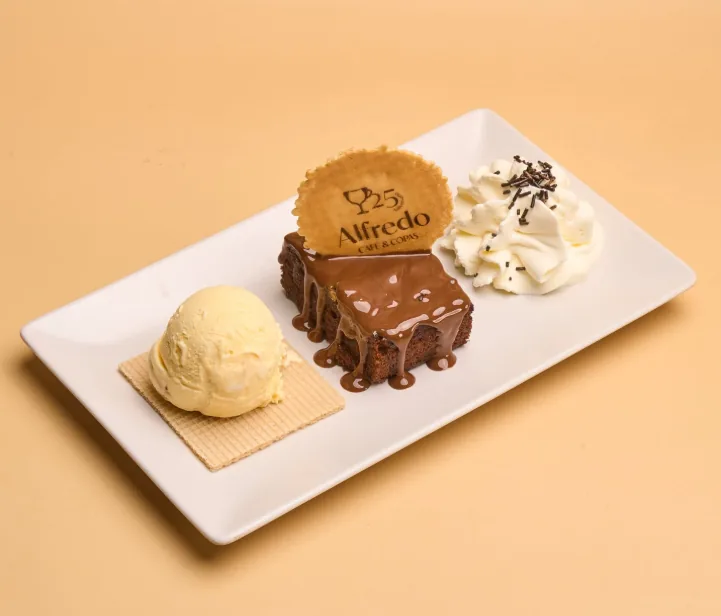
Gofres, crepes y caprichos
Gofre artesano, crepes rellenos, brownie o brioche, con o sin helado. Después eliges la salsa (Nutella, crema Lotus, pistacho, Kinder Bueno…) y los toppings.
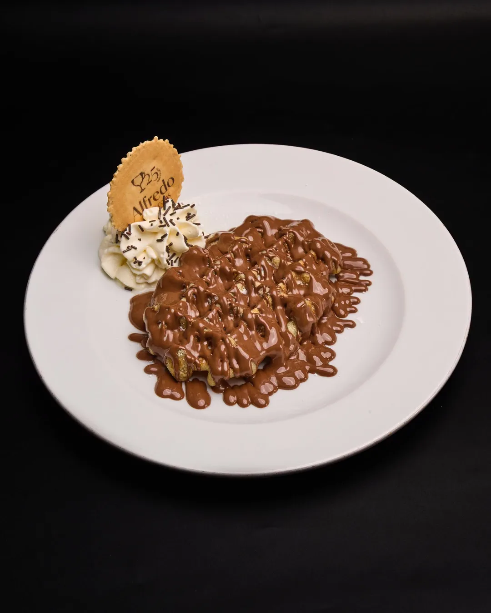
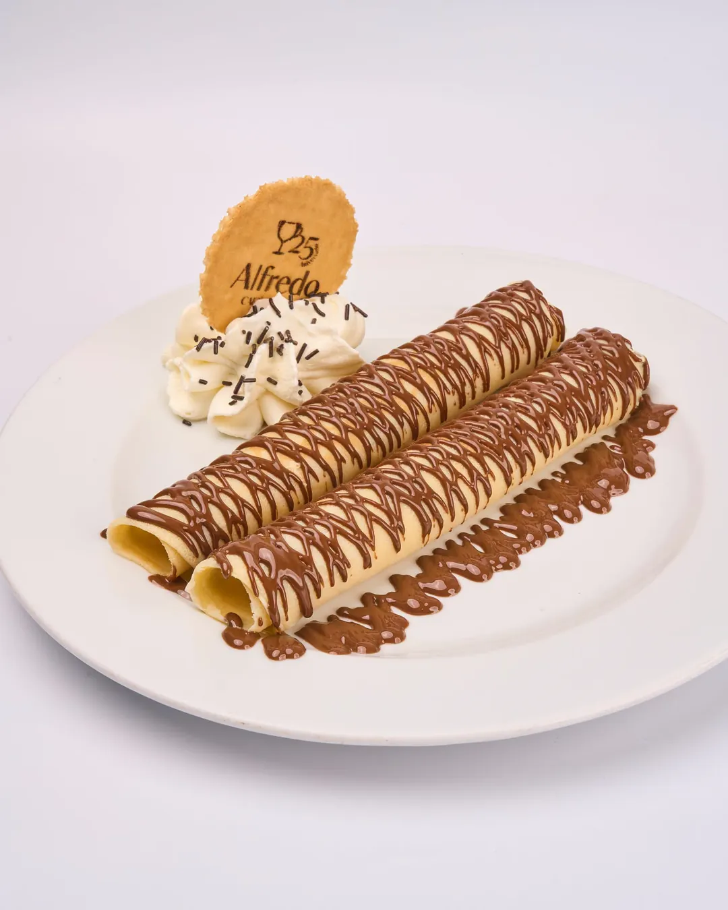
Cafés y tés
Cafés especiales como el bombón o la Dulcinea, cafés fríos y con alcohol, chocolates y más de veinte tés e infusiones. La especialidad de la casa es el chai latte.
Tartas
En la carta hay más de quince: la de la abuela Pepa, red velvet, carrot cake, tocino de cielo con crema al PX, muerte por chocolate… Se sirven en plato, con nata y un hilo de sirope. Pregunta al camarero cuáles quedan ese día.
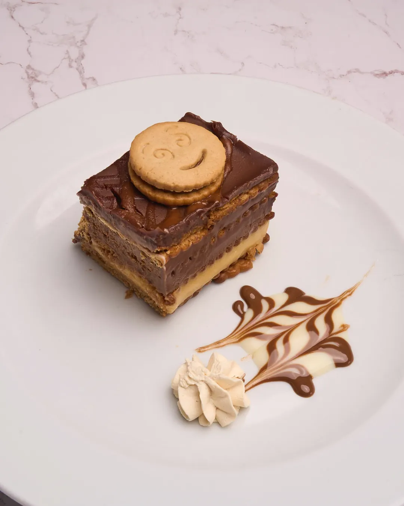
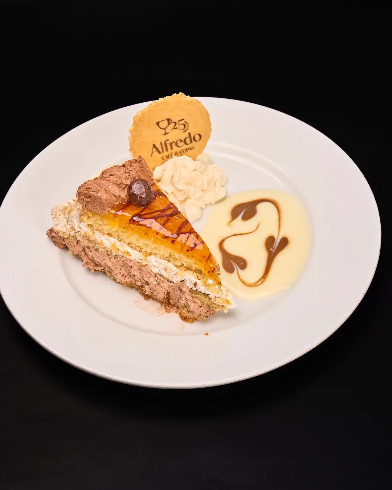
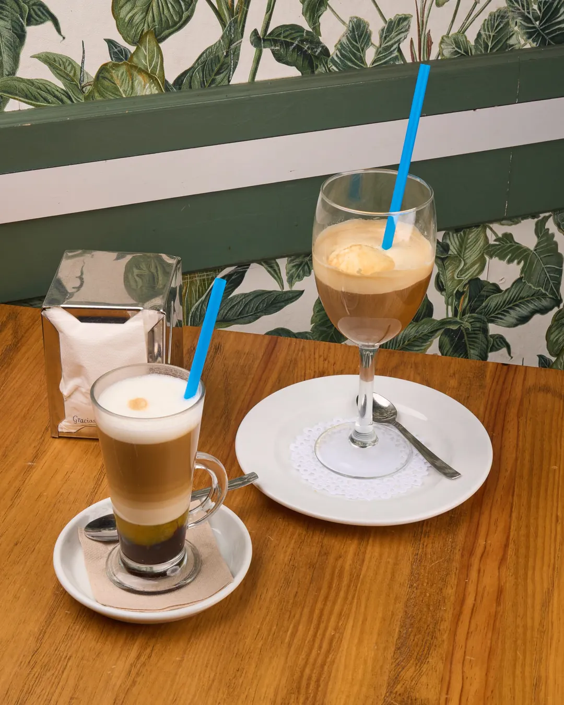
Desde hace más de 25 años, un lugar para quedar
Alfredo Café & Copas lleva más de 25 años en la Avenida Lola Flores. En todo este tiempo ha sido el sitio de quedar de varias generaciones de jerezanos: para merendar con la familia, para pasar la tarde en la terraza o para tomar algo por la noche con los amigos.
Detrás de la barra está Alfredo, que ha dedicado su vida a la hostelería y hoy es presidente de la asociación hostelera de Jerez de la Frontera. El trato es el de siempre: cercano y de confianza.
Helados, batidos y granizados
En verano es lo que más sale. Más de veinte copas de helado, casi cincuenta sabores, batidos, granizados y smoothies, para tomar en la terraza cuando baja el sol.
Ver la carta de la heladería- Batido helado de fresa
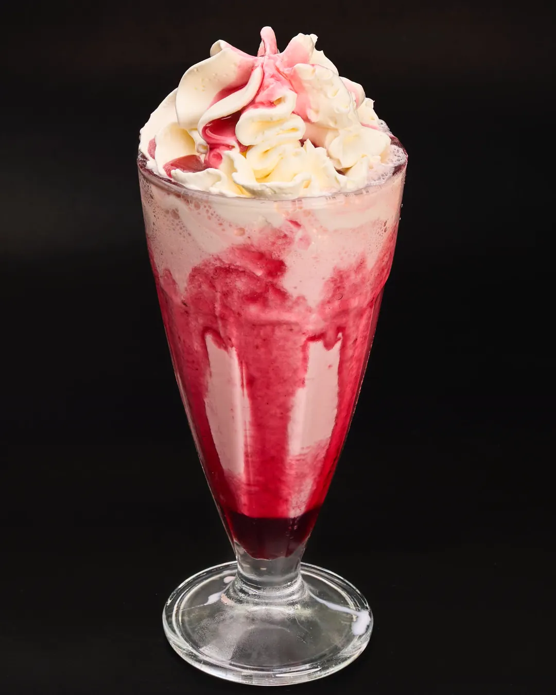
- Batido helado de vainilla
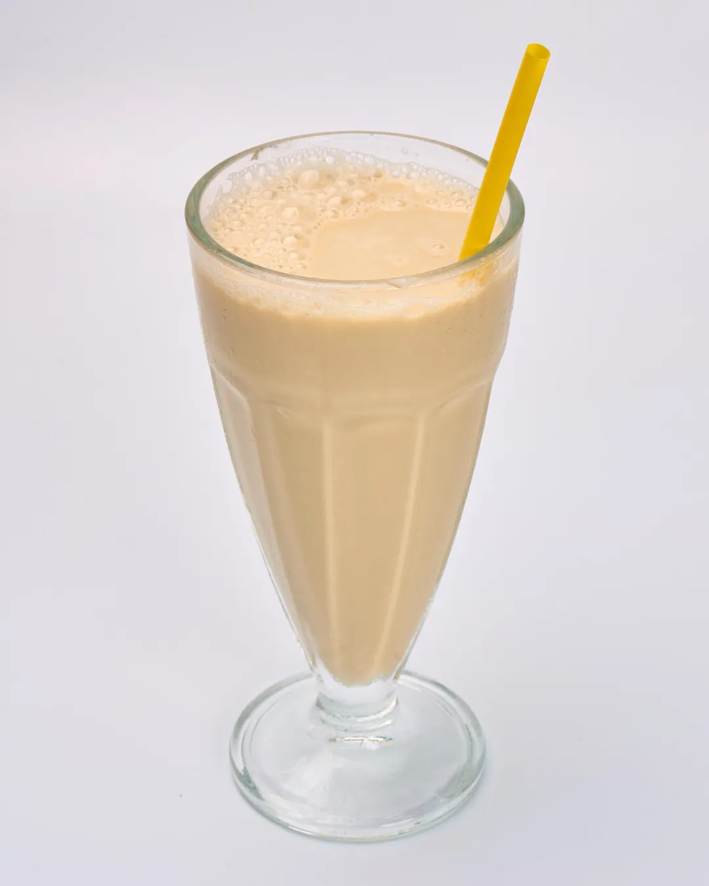
- Copa tropical
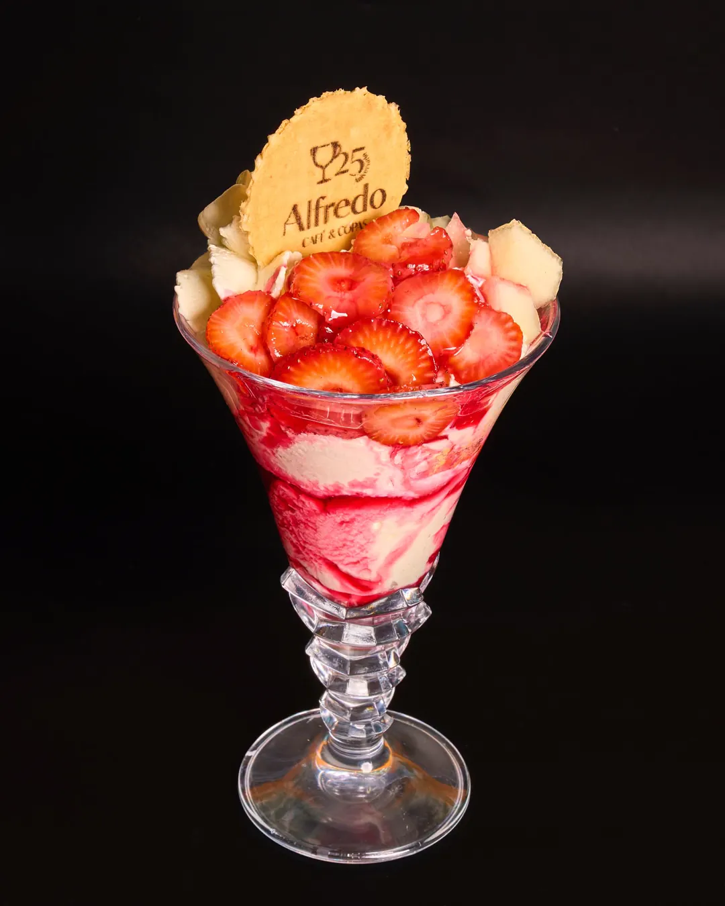
- Copa Ferrero
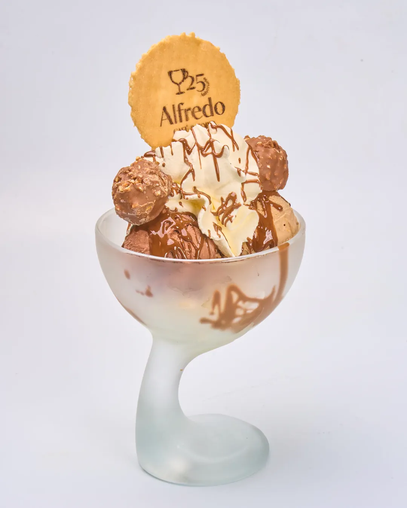
- Batido helado de chocolate
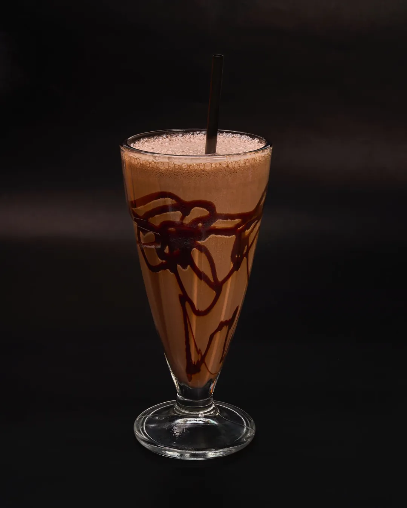
La planta de arriba, para celebraciones
Tenemos una planta superior que se reserva para cumpleaños, comuniones, bautizos, cenas de empresa o cualquier reunión. Llámanos, cuéntanos cuántos vais a ser y qué queréis tomar, y lo organizamos.
Llamar para reservar · 635 47 07 01- Cumpleaños
- Comuniones y bautizos
- Cenas de empresa y de Navidad
- Reuniones de amigos y familia
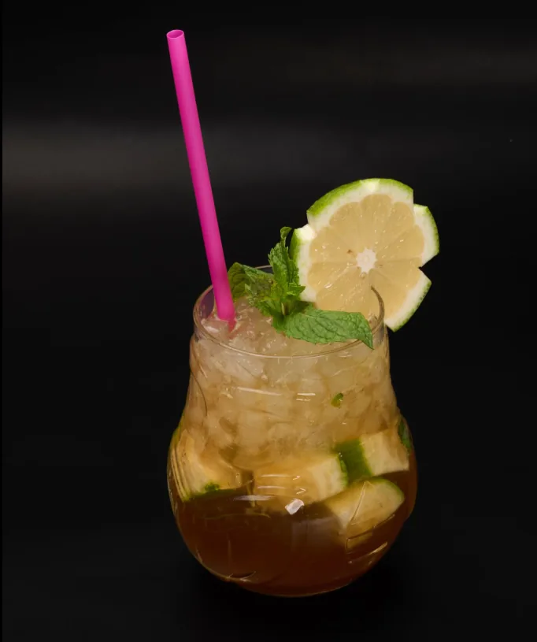
Copas largas y cócteles
Gin tonics, copas largas y casi treinta cócteles, algunos con vinos de Jerez, como el Spritz Sherry o el Negroni de Jerez, y mojitos de sabores con o sin alcohol.
Trabajamos con ron, whisky, ginebra, vodka y casi cualquier licor que se te ocurra. Si buscas una marca concreta, pregunta al camarero. Viernes y sábados cerramos a las 2:30.
Dónde estamos
Av. Lola Flores, 3Jerez de la Frontera
- Reservas y teléfono
- 635 47 07 01
- Espacios
- Terraza y planta superior para celebraciones
Horario
| Lunes | Cerrado |
|---|---|
| Martes a jueves | 15:30 – 22:00 |
| Viernes y sábado | 15:30 – 02:30 |
| Domingo | 15:00 – 22:00 |
En festivos el horario puede cambiar. Si tienes dudas, llámanos.